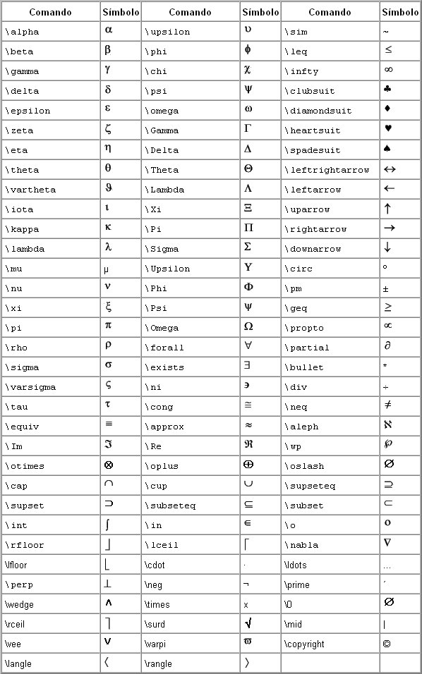
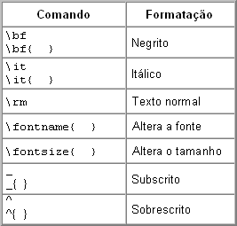
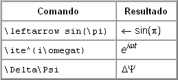

| Menu Ferramentas - Reprodução do Voo - Editor de Cenário
|

|
Texto Formatado Padrão TeX
Objetos
auxiliares do tipo "texto" suportam formatação especial no padrão
"TeX". Esse padrão permite a inserção de símbolos e
caracteres especiais como letras gregas, símbolos
matemáticos, setas, etc. Também é possível inserir formatação especial como itálico, sublinhado, exponencial, etc.
Para inserir um símbolo ou caracter especial, basta incluir um comando padrão diretamente no texto.
A tabela a seguir apresenta os comandos de texto e os símbolos e caracteres especiais correspondentes:

Para
inserir formatação especial de texto, use os comandos de formatação
seguidos do texto a ser alterado envolvido por chaves. Na ausência das
chaves, todo o texto à direita do comando será alterado.
A tabela a seguir apresenta os comandos de formatação e os resultados correspondentes:

Para apresentar um dos caracteres de comando, preceda-o com uma barra invertida (por exemplo, "\\" para apresentar "\").
Exemplos
A seguir são apresentados alguns exemplos de formatação TeX:

|
|
Editor de cenário |
|
|